00 · 知识地图与学习路线（导读）
1. 从一个机器人任务看完整知识链
任务：“把桌上的红色杯子放入水槽。”
- 语言理解把命令拆成目标对象“红杯”和目标区域“水槽”。
- 视觉感知检测杯子/水槽，深度估计它们的位置。
- 坐标几何把相机坐标下的物体位姿变换到机器人基座坐标。
- 空间推理验证杯子是否在桌面、目标槽是否可达、路径有无障碍。
- 操作规划生成接近、抓取、抬起、移动、放置动作。
- 控制器将轨迹转成关节命令，传感器反馈修正实际误差。
- 新观测确认是否抓稳和放置成功；失败时重新定位和规划。
这条链说明 AI、机器人学和空间智能的分工：语言模型提供语义泛化，几何模块提供可测量空间，规划控制提供可执行动作，闭环传感器避免把开环预测当事实。
2. 模块之间的依赖图

查看 Mermaid 图源码
flowchart TD M[数学 / 概率 / 优化 / 坐标] --> A[学习模型 / Transformer / 生成] M --> R[机器人运动学 / 动力学 / 控制] A --> V[相机 / 深度 / 三维感知 / SLAM] V --> S[空间表征 / 场景图 / 信念] S --> P[任务规划 / 路径 / 动作块] A --> P R --> C[反馈控制 / 执行] P --> C C --> E[环境 / 新观测] E --> V E --> T[评测 / 复现 / 失败分析]
若从机器学习切入，可优先学 01、02、04、06；若从机械臂实验切入，优先学 01、03、04、06；若研究空间推理，优先学 01、04、05、08。
专题模块（11–17）与前置依赖

查看 Mermaid 图源码
flowchart LR B03[03 机器人学] --> M11[11 强化学习 / Sim2Real] B06[06 具身学习 / VLA] --> M11 B03 --> M12[12 抓取 / 灵巧操作] B04[04 三维视觉] --> M12 B04 --> M13[13 导航 / VLN] B05[05 空间智能] --> M13 B04 --> M14[14 三维基础模型 / 空间推理] B05 --> M14 B05 --> M15[15 世界模型] M11 --> M15 B03 --> M16[16 腿足 / 人形] M11 --> M16 B06 --> M17[17 机器人基础模型] M12 --> M17
| 研究方向 | 推荐顺序 | 配套视频（18） |
|---|---|---|
| 空间智能 / 空间问答 | 01 → 04 → 05 → 14 → 08 | 参考系、卡尔曼、体渲染 |
| 操作与抓取 | 03 → 12 → 06 → 17 | 二连杆 IK、抓取力学、DP、VLA |
| 移动导航 | 04 → 05 → 13 | 导航建图与探索 |
| 腿足 / 人形 | 03 → 11 → 16 | PPO 与 Sim2Real、捕获点 |
| 世界模型与规划 | 05 → 11 → 15 | 世界模型与 CEM |
| 通用机器人策略 | 02 → 06 → 17 → 08 | BC 与 DAgger、DP、VLA |
建议先看对应视频建立直觉，再读讲义中的符号表与推导，最后用 10 交互实验或自己的小数值例子验证。
3. 按研究目标选学习模块
| 研究问题 | 需要先掌握 | 典型输入→输出 | 常见基线 |
|---|---|---|---|
| 空间问答 | 相机几何、对象检测、关系定义 | 图像/场景→距离或关系 | 几何计算、VLM |
| 移动导航 | SLAM、占据图、A*/局部规划 | 激光/相机→速度命令 | A*、DWA/MPC |
| 桌面抓取 | 深度、手眼标定、IK、碰撞 | RGB-D→抓取轨迹 | 几何抓取、行为克隆 |
| 动作生成 | 概率建模、BC、扩散/流 | 观测+演示→动作块 | 高斯BC、Diffusion Policy |
| 世界模型 | 状态表示、时序预测、MPC | 历史状态/动作→未来状态 | 解析动力学、单步预测 |
| 训练部署 | 显存、吞吐、延迟 profiling | 模型/任务→可运行系统 | 精度/并行/缓存优化 |
| 腿足行走 | 质心动力学、RL、Sim2Real | 本体感知→关节目标 | MPC + WBC、PPO 教师—学生 |
| 开放词汇 3D | 多视角几何、CLIP 特征融合 | RGB-D 序列→可查询 3D 特征 | OpenScene、ConceptGraphs |
| 通用操作策略 | 数据混合、动作表示、评测统计 | 多相机+语言→动作块 | ACT、Octo、OpenVLA、π0 |
4. 学习成果应该是什么
- 能写明符号、坐标系、单位和维数，而不是只背公式。
- 能从概率模型/几何关系推到训练或估计目标，知道每一步用了什么假设。
- 能画出数据路径、训练路径和在线执行路径。
- 能用一个小数值例子验证公式，再用真实数据检查误差和异常。
- 能区分“模型看起来合理”和“机器人执行安全/成功”。
5. 符号与知识边界
同一字母可能跨领域复用：β 在扩散中常表示噪声日程，在损失中又可作正则系数；λ 可作像素投影尺度也可作优化权重。阅读时看章节定义、维数和单位。涉及具体 GPU、模型排名、基准分数、商业产品状态时，需要查当前官方规格/论文版本。
来源与核验状态见 参考资料 · Markdown 源稿